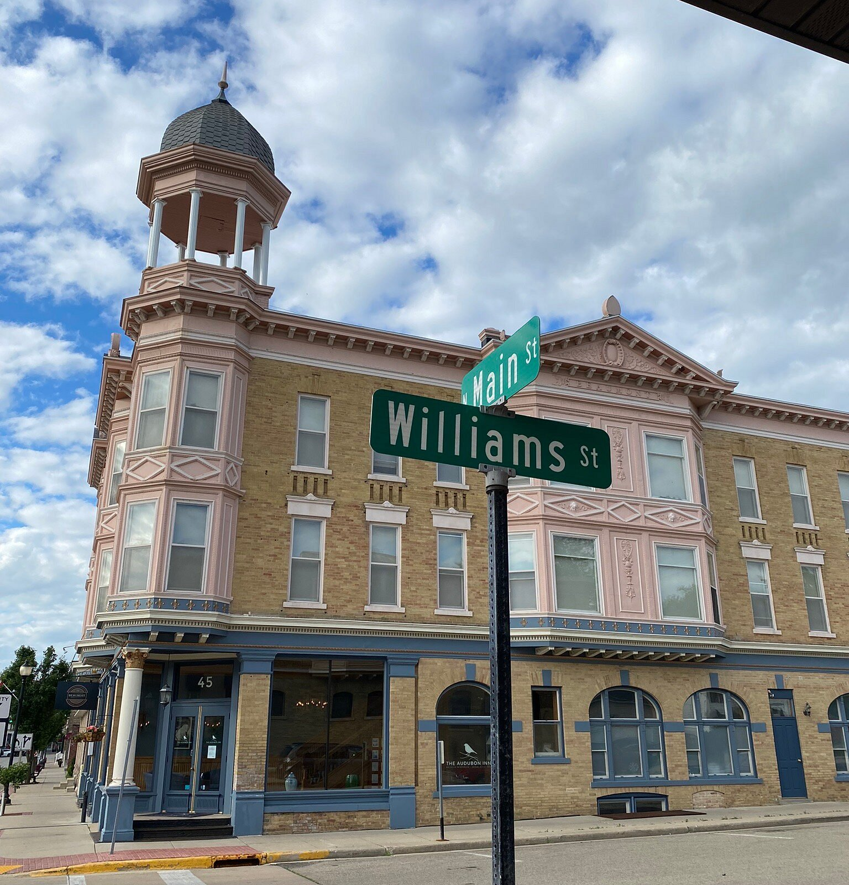
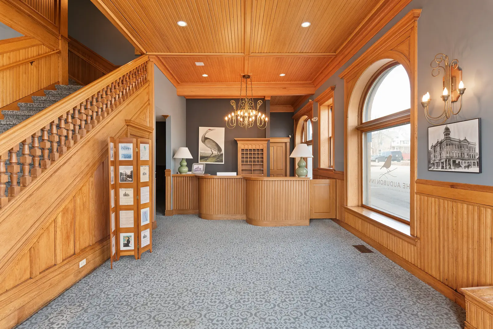

MAYVILLE, WISCONSIN · EST. 1896
A little history.
A little wild.
Settle into a storied Wisconsin inn.
Leave room for a little discovery.
THE AUDUBON INN · HOTEL & EVENT VENUEMAYVILLE, WISCONSIN
YOUR NEXT CHAPTERA room to call your own.
18 guest rooms. A historic address.
A weekend with possibilities.
A WARM WELCOME, SINCE 1896
Some places are
worth slowing
down for.
Make the Audubon Inn your starting point for a Mayville escape. Stay awhile, gather your favorite people, and discover the landscapes of nearby Horicon Marsh.
Meet the inn
HISTORIC1896MAYVILLE, WI
MAKE YOURSELF AT HOME
Your kind of getaway.
A room for the weekend. A toast with friends.
A reason to bring everyone together.


FOLLOW YOUR CURIOSITY
The wild is
closer than you think.
Trade the everyday for open skies, marsh trails, and a pair of binoculars. Horicon Marsh invites you to take the scenic route.
Discover Horicon MarshHow do I check rates and availability?
Use our ResNexus booking page for current rooms, prices, and reservation terms. A reservation is confirmed by the booking provider, not by this website.
Can we reserve rooms for a wedding or group?
Yes—contact the inn to discuss a room block or a full-property gathering. Room availability, event arrangements, and the terms of your quote must be confirmed with the team.
What if I will arrive after front-desk hours?
Contact the front desk before your stay to arrange an after-hours arrival. Ask the team to confirm your arrival instructions and check-in and check-out times.
A STAY WITH A STORY